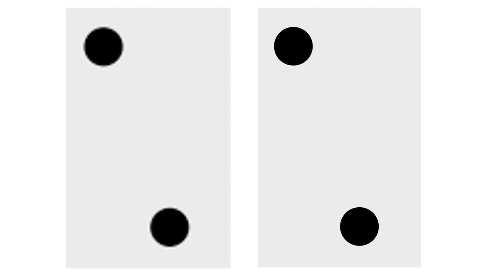

Effective data visualization
Contents
Effective data visualization#
Overview#
This chapter will introduce concepts and tools relating to data visualization beyond what we have seen and practiced so far. We will focus on guiding principles for effective data visualization and explaining visualizations independent of any particular tool or programming language. In the process, we will cover some specifics of creating visualizations (scatter plots, bar plots, line plots, and histograms) for data using Python.
Chapter learning objectives#
By the end of the chapter, readers will be able to do the following:
Given a data set and a question, select from the above plot types and use Python to create a visualization that best answers the question.
Given a visualization and a question, evaluate the effectiveness of the visualization and suggest improvements to better answer the question.
Referring to the visualization, communicate the conclusions in non-technical terms.
Identify rules of thumb for creating effective visualizations.
Define the two key aspects of altair objects:
mark objects
encodings
Use the altair library in Python to create and refine the above visualizations using:
mark objects: mark_point, mark_line, mark_bar
encodings : x, y, fill, color, shape
subplots: facet
Describe the difference in raster and vector output formats.
Use
chart.save()to save visualizations in.pngand.svgformat.
Choosing the visualization#
Ask a question, and answer it {-}#
The purpose of a visualization is to answer a question \index{question!visualization} about a data set of interest. So naturally, the first thing to do before creating a visualization is to formulate the question about the data you are trying to answer. A good visualization will clearly answer your question without distraction; a great visualization will suggest even what the question was itself without additional explanation. Imagine your visualization as part of a poster presentation for a project; even if you aren’t standing at the poster explaining things, an effective visualization will convey your message to the audience.
Recall the different data analysis questions from Chapter @ref(intro). With the visualizations we will cover in this chapter, we will be able to answer only descriptive and exploratory questions. Be careful to not answer any predictive, inferential, causal or mechanistic questions with the visualizations presented here, as we have not learned the tools necessary to do that properly just yet.
As with most coding tasks, it is totally fine (and quite common) to make mistakes and iterate a few times before you find the right visualization for your data and question. There are many different kinds of plotting graphics available to use (see Chapter 5 of Fundamentals of Data Visualization [@wilkeviz] for a directory). The types of plot that we introduce in this book are shown in Fig. 29 which one you should select depends on your data and the question you want to answer. In general, the guiding principles of when to use each type of plot are as follows:
\index{visualization!line} \index{visualization!histogram} \index{visualization!scatter} \index{visualization!bar}
scatter plots visualize the relationship between two quantitative variables
line plots visualize trends with respect to an independent, ordered quantity (e.g., time)
bar plots visualize comparisons of amounts
histograms visualize the distribution of one quantitative variable (i.e., all its possible values and how often they occur) \index{distribution}

Fig. 29 Examples of scatter, line and bar plots, as well as histograms.#
All types of visualization have their (mis)uses, but three kinds are usually hard to understand or are easily replaced with an oft-better alternative. In particular, you should avoid pie charts; it is generally better to use bars, as it is easier to compare bar heights than pie slice sizes. You should also not use 3-D visualizations, as they are typically hard to understand when converted to a static 2-D image format. Finally, do not use tables to make numerical comparisons; humans are much better at quickly processing visual information than text and math. Bar plots are again typically a better alternative.
Refining the visualization#
Convey the message, minimize noise {-}#
Just being able to make a visualization in Python with altair (or any other tool
for that matter) doesn’t mean that it effectively communicates your message to
others. Once you have selected a broad type of visualization to use, you will
have to refine it to suit your particular need. Some rules of thumb for doing
this are listed below. They generally fall into two classes: you want to
make your visualization convey your message, and you want to reduce visual noise
as much as possible. Humans have limited cognitive ability to process
information; both of these types of refinement aim to reduce the mental load on
your audience when viewing your visualization, making it easier for them to
understand and remember your message quickly.
Convey the message
Make sure the visualization answers the question you have asked most simply and plainly as possible.
Use legends and labels so that your visualization is understandable without reading the surrounding text.
Ensure the text, symbols, lines, etc., on your visualization are big enough to be easily read.
Ensure the data are clearly visible; don’t hide the shape/distribution of the data behind other objects (e.g., a bar).
Make sure to use color schemes that are understandable by those with colorblindness (a surprisingly large fraction of the overall population—from about 1% to 10%, depending on sex and ancestry [@deebblind]). For example, Color Schemes provides the ability to pick such color schemes, and you can check your visualizations after you have created them by uploading to online tools such as a color blindness simulator.
Redundancy can be helpful; sometimes conveying the same message in multiple ways reinforces it for the audience.
Minimize noise
Use colors sparingly. Too many different colors can be distracting, create false patterns, and detract from the message.
Be wary of overplotting. Overplotting is when marks that represent the data overlap, and is problematic as it prevents you from seeing how many data points are represented in areas of the visualization where this occurs. If your plot has too many dots or lines and starts to look like a mess, you need to do something different.
Only make the plot area (where the dots, lines, bars are) as big as needed. Simple plots can be made small.
Don’t adjust the axes to zoom in on small differences. If the difference is small, show that it’s small!
Creating visualizations with altair#
Build the visualization iteratively {-}#
This section will cover examples of how to choose and refine a visualization given a data set and a question that you want to answer,
and then how to create the visualization in Python \index{ggplot} using altair. To use the altair package, we need to import the altair package. We will also import pandas in order to support reading and other data related operations.
import pandas as pd
import altair as alt
Scatter plots and line plots: the Mauna Loa CO\(_{\text{2}}\) data set#
The Mauna Loa CO\(_{\text{2}}\) data set, curated by Dr. Pieter Tans, NOAA/GML and Dr. Ralph Keeling, Scripps Institution of Oceanography, records the atmospheric concentration of carbon dioxide (CO\(_{\text{2}}\), in parts per million) at the Mauna Loa research station in \index{Mauna Loa} Hawaii from 1959 onward [@maunadata]. For this book, we are going to focus on the last 40 years of the data set, 1980-2020.
Question: \index{question!visualization} Does the concentration of atmospheric CO\(_{\text{2}}\) change over time, and are there any interesting patterns to note?
To get started, we will read and inspect the data:
# mauna loa carbon dioxide data
co2_df = pd.read_csv("data/mauna_loa_data.csv", parse_dates=['date_measured'])
co2_df
| date_measured | ppm | |
|---|---|---|
| 0 | 1980-02-01 | 338.34 |
| 1 | 1980-03-01 | 340.01 |
| 2 | 1980-04-01 | 340.93 |
| 3 | 1980-05-01 | 341.48 |
| 4 | 1980-06-01 | 341.33 |
| ... | ... | ... |
| 479 | 2020-02-01 | 414.11 |
| 480 | 2020-03-01 | 414.51 |
| 481 | 2020-04-01 | 416.21 |
| 482 | 2020-05-01 | 417.07 |
| 483 | 2020-06-01 | 416.39 |
484 rows × 2 columns
co2_df.dtypes
date_measured datetime64[ns]
ppm float64
dtype: object
We see that there are two columns in the co2_df data frame; date_measured and ppm.
The date_measured column holds the date the measurement was taken,
and is of type datetime64.
The ppm column holds the value of CO\(_{\text{2}}\) in parts per million
that was measured on each date, and is type float64.
Note:
read_csvwas able to parse thedate_measuredcolumn into thedatetimevector type because it was entered in the international standard date format, called ISO 8601, which lists dates asyear-month-dayand we usedparse_dates=True.datetimevectors aredoublevectors with special properties that allow them to handle dates correctly. For example,datetimetype vectors allow functions likealtairto treat them as numeric dates and not as character vectors, even though they contain non-numeric characters (e.g., in thedate_measuredcolumn in theco2_dfdata frame). This means Python will not accidentally plot the dates in the wrong order (i.e., not alphanumerically as would happen if it was a character vector). More about dates and times can be viewed here
Since we are investigating a relationship between two variables
(CO\(_{\text{2}}\) concentration and date),
a scatter plot is a good place to start.
Scatter plots show the data as individual points with x (horizontal axis)
and y (vertical axis) coordinates.
Here, we will use the measurement date as the x coordinate
and the CO\(_{\text{2}}\) concentration as the y coordinate.
while using the altair package, We create a plot object with the alt.Chart() function.
There are a few basic aspects of a plot that we need to specify:
\index{ggplot!aesthetic mapping}
\index{ggplot!geometric object}
The name of the data frame object to visualize.
Here, we specify the
co2_dfdata frame as an argument to thealt.Chart()function
The geometric object, which specifies \index{aesthetic mapping} how the mapped data should be displayed.
To create a geometric object, we use
Chart.mark_*methods (see the altair reference for a list of geometric objects).Here, we use the
mark_pointfunction to visualize our data as a scatter plot.
The geometric encoding, which tells \index{aesthetic mapping}
altairhow the columns in the data frame map to properties of the visualization.To create an encoding, we use the
encode()function.The
encode()method builds a key-value mapping between encoding channels (such as x, y) to fields in the dataset, accessed by field name(column names)Here, we set the plot
xaxis to thedate_measuredvariable, and the plotyaxis to theppmvariable.
co2_scatter = alt.Chart(co2_df).mark_point().encode(
x = "date_measured",
y = alt.Y("ppm", scale=alt.Scale(zero=False)))
Fig. 30 Scatter plot of atmospheric concentration of CO\(_{2}\) over time.#
Note: We can change the size of the point and color of the plot by specifying
mark_point(size=10, color='black').
Certainly, the visualization in Fig. 30 shows a clear upward trend in the atmospheric concentration of CO\(_{\text{2}}\) over time. This plot answers the first part of our question in the affirmative, but that appears to be the only conclusion one can make from the scatter visualization.
One important thing to note about this data is that one of the variables
we are exploring is time.
Time is a special kind of quantitative variable
because it forces additional structure on the data—the
data points have a natural order.
Specifically, each observation in the data set has a predecessor
and a successor, and the order of the observations matters; changing their order
alters their meaning.
In situations like this, we typically use a line plot to visualize
the data. Line plots connect the sequence of x and y coordinates
of the observations with line segments, thereby emphasizing their order.
We can create a line plot in altair using the mark_line function.
Let’s now try to visualize the co2_df as a line plot
with just the default arguments:
\index{ggplot!geom_line}
co2_line = alt.Chart(co2_df).mark_line(color='black').encode(
x = "date_measured",
y = alt.Y("ppm", scale=alt.Scale(zero=False)))
Fig. 31 Line plot of atmospheric concentration of CO\(_{2}\) over time.#
Aha! Fig. 31 shows us there is another interesting phenomenon in the data: in addition to increasing over time, the concentration seems to oscillate as well. Given the visualization as it is now, it is still hard to tell how fast the oscillation is, but nevertheless, the line seems to be a better choice for answering the question than the scatter plot was. The comparison between these two visualizations also illustrates a common issue with scatter plots: often, the points are shown too close together or even on top of one another, muddling information that would otherwise be clear (overplotting). \index{overplotting}
Now that we have settled on the rough details of the visualization, it is time
to refine things. This plot is fairly straightforward, and there is not much
visual noise to remove. But there are a few things we must do to improve
clarity, such as adding informative axis labels and making the font a more
readable size. To add axis labels, we use the title argument along with alt.X and alt.Y functions. To
change the font size, we use the configure_axis function with the titleFontSize argument:
\index{ggplot!xlab,ylab}
\index{ggplot!theme}
co2_line_labels = alt.Chart(co2_df).mark_line(color='black').encode(
x = alt.X("date_measured", title = "Year"),
y = alt.Y("ppm", scale=alt.Scale(zero=False), title = "Atmospheric CO2 (ppm)")).configure_axis(
titleFontSize=12)
Fig. 32 Line plot of atmospheric concentration of CO\(_{2}\) over time with clearer axes and labels.#
Note: The
configure_function inaltairis complex and supports many other functionalities, which can be viewed here
Finally, let’s see if we can better understand the oscillation by changing the
visualization slightly. Note that it is totally fine to use a small number of
visualizations to answer different aspects of the question you are trying to
answer. We will accomplish this by using scale, \index{ggplot!scales}
another important feature of altair that easily transforms the different
variables and set limits. We scale the horizontal axis using the alt.Scale(domain=['1990', '1993']) by restricting the x-axis values between 1990 and 1994,
and the vertical axis with the alt.Scale(zero=False) function, to not start the y-axis with zero.
In particular, here, we will use the alt.Scale() function to zoom in
on just five years of data (say, 1990-1994).
domain argument takes a list of length two
to specify the upper and lower bounds to limit the axis.
co2_line_scale = alt.Chart(co2_df).mark_line(color='black', clip=True).encode(
x=alt.X("date_measured", title="Measurement Date", axis=alt.Axis(tickCount=4), scale=alt.Scale(domain=['1990', '1994'])),
y=alt.Y("ppm", scale=alt.Scale(zero=False), title="Atmospheric CO2 (ppm)")
).configure_axis(
titleFontSize=12
)
Fig. 33 Line plot of atmospheric concentration of CO\(_{2}\) from 1990 to 1994.#
Interesting! It seems that each year, the atmospheric CO\(_{\text{2}}\) increases until it reaches its peak somewhere around April, decreases until around late September, and finally increases again until the end of the year. In Hawaii, there are two seasons: summer from May through October, and winter from November through April. Therefore, the oscillating pattern in CO\(_{\text{2}}\) matches up fairly closely with the two seasons.
As you might have noticed from the code used to create the final visualization
of the co2_df data frame, we used axis=alt.Axis(tickCount=4) to add the lines in the background to better visualise and map the values on the axis to the plot.
A useful analogy to constructing a data visualization is painting a picture.
We start with a blank canvas,
and the first thing we do is prepare the surface
for our painting by adding primer.
In our data visualization this is akin to calling alt.Chart
and specifying the data set we will be using.
Next, we sketch out the background of the painting.
In our data visualization,
this would be when we map data to the axes in the encode function.
Then we add our key visual subjects to the painting.
In our data visualization,
this would be the geometric objects (e.g., mark_point, mark_line, etc.).
And finally, we work on adding details and refinements to the painting.
In our data visualization this would be when we fine tune axis labels,
change the font, adjust the point size, and do other related things.
Scatter plots: the Old Faithful eruption time data set#
The faithful data set \index{Old Faithful} contains measurements
of the waiting time between eruptions
and the subsequent eruption duration (in minutes) of the Old Faithful
geyser in Yellowstone National Park, Wyoming, United States.
First, we will read the data and then answer the following question:
Question: \index{question!visualization} Is there a relationship between the waiting time before an eruption and the duration of the eruption?
faithful = pd.read_csv("data/faithful.csv")
faithful
| eruptions | waiting | |
|---|---|---|
| 0 | 3.600 | 79 |
| 1 | 1.800 | 54 |
| 2 | 3.333 | 74 |
| 3 | 2.283 | 62 |
| 4 | 4.533 | 85 |
| ... | ... | ... |
| 267 | 4.117 | 81 |
| 268 | 2.150 | 46 |
| 269 | 4.417 | 90 |
| 270 | 1.817 | 46 |
| 271 | 4.467 | 74 |
272 rows × 2 columns
Here again, we investigate the relationship between two quantitative variables
(waiting time and eruption time).
But if you look at the output of the data frame,
you’ll notice that unlike time in the Mauna Loa CO\(_{\text{2}}\) data set,
neither of the variables here have a natural order to them.
So a scatter plot is likely to be the most appropriate
visualization. Let’s create a scatter plot using the altair
package with the waiting variable on the horizontal axis, the eruptions
variable on the vertical axis, and the mark_point geometric object.
The result is shown in Fig. 34.
faithful_scatter = alt.Chart(faithful).mark_point(color='black', filled=True).encode(
x = "waiting",
y = "eruptions"
)
Fig. 34 Scatter plot of waiting time and eruption time.#
We can see in Fig. 34 that the data tend to fall
into two groups: one with short waiting and eruption times, and one with long
waiting and eruption times. Note that in this case, there is no overplotting:
the points are generally nicely visually separated, and the pattern they form
is clear. Also, note that to make the points solid, we used filled=True as argument of the mark_point function. In place of mark_point(filled=True), we can also use mark_circle().
In order to refine the visualization, we need only to add axis
labels and make the font more readable:
faithful_scatter_labels = alt.Chart(faithful).mark_circle(color='black').encode(
x = alt.X("waiting", title = "Waiting Time (mins)"),
y = alt.Y("eruptions", title = "Eruption Duration (mins)")
)
Fig. 35 Scatter plot of waiting time and eruption time with clearer axes and labels.#
Axis transformation and colored scatter plots: the Canadian languages data set#
Recall the can_lang data set [@timbers2020canlang] from Chapters @ref(intro), @ref(reading), and @ref(wrangling),
\index{Canadian languages} which contains counts of languages from the 2016
Canadian census.
Question: \index{question!visualization} Is there a relationship between the percentage of people who speak a language as their mother tongue and the percentage for whom that is the primary language spoken at home? And is there a pattern in the strength of this relationship in the higher-level language categories (Official languages, Aboriginal languages, or non-official and non-Aboriginal languages)?
To get started, we will read and inspect the data:
can_lang = pd.read_csv("data/can_lang.csv")
We will begin with a scatter plot of the mother_tongue and most_at_home columns from our data frame.
The resulting plot is shown in Fig. 36
\index{ggplot!geom_point}
can_lang_plot = alt.Chart(can_lang).mark_circle(color='black').encode(
x = "most_at_home",
y = "mother_tongue")
Fig. 36 Scatter plot of number of Canadians reporting a language as their mother tongue vs the primary language at home#
To make an initial improvement in the interpretability of Fig. 36, we should replace the default axis names with more informative labels. We can add a line break in the axis names so that some of the words are printed on a new line. This will make the axes labels on the plots more readable. To do this, we pass the title as a list. Each element of the list will be on a new line. \index{escape character} We should also increase the font size to further improve readability.
can_lang_plot_labels = alt.Chart(can_lang).mark_circle(color='black').encode(
x = alt.X("most_at_home",title = ["Language spoken most at home", "(number of Canadian residents)"]),
y = alt.Y("mother_tongue", scale=alt.Scale(zero=False), title = ["Mother tongue", "(number of Canadian residents)"])).configure_axis(
titleFontSize=12)
Fig. 37 Scatter plot of number of Canadians reporting a language as their mother tongue vs the primary language at home with x and y labels.#
Okay! The axes and labels in Fig. 37 are
much more readable and interpretable now. However, the scatter points themselves could use
some work; most of the 214 data points are bunched
up in the lower left-hand side of the visualization. The data is clumped because
many more people in Canada speak English or French (the two points in
the upper right corner) than other languages.
In particular, the most common mother tongue language
has 19460850.0 speakers,
while the least common has only 10.0.
That’s a 14.0 -decimal-place difference
in the magnitude of these two numbers!
We can confirm that the two points in the upper right-hand corner correspond
to Canada’s two official languages by filtering the data:
\index{filter}
can_lang.loc[(can_lang['language']=='English') | (can_lang['language']=='French')]
| category | language | mother_tongue | most_at_home | most_at_work | lang_known | |
|---|---|---|---|---|---|---|
| 54 | Official languages | English | 19460850.0 | 22162865.0 | 15265335.0 | 29748265.0 |
| 59 | Official languages | French | 7166700.0 | 6943800.0 | 3825215.0 | 10242945.0 |
Recall that our question about this data pertains to all languages;
so to properly answer our question,
we will need to adjust the scale of the axes so that we can clearly
see all of the scatter points.
In particular, we will improve the plot by adjusting the horizontal
and vertical axes so that they are on a logarithmic (or log) scale. \index{logarithmic scale}
Log scaling is useful when your data take both very large and very small values,
because it helps space out small values and squishes larger values together.
For example, \(\log_{10}(1) = 0\), \(\log_{10}(10) = 1\), \(\log_{10}(100) = 2\), and \(\log_{10}(1000) = 3\);
on the logarithmic scale, \index{ggplot!logarithmic scaling}
the values 1, 10, 100, and 1000 are all the same distance apart!
So we see that applying this function is moving big values closer together
and moving small values farther apart.
Note that if your data can take the value 0, logarithmic scaling may not
be appropriate (since log10(0) = -inf in Python). There are other ways to transform
the data in such a case, but these are beyond the scope of the book.
We can accomplish logarithmic scaling in the altair visualization
using the argument type="log" in the scale functions.
can_lang_plot_log = alt.Chart(can_lang).mark_circle(color='black').encode(
x = alt.X("most_at_home",title = ["Language spoken most at home", "(number of Canadian residents)"], scale=alt.Scale( type="log"), axis=alt.Axis(tickCount=7)),
y = alt.Y("mother_tongue", title = ["Mother tongue", "(number of Canadian residents)"], scale=alt.Scale(type="log"), axis=alt.Axis(tickCount=7))).configure_axis(
titleFontSize=12)
Fig. 38 Scatter plot of number of Canadians reporting a language as their mother tongue vs the primary language at home with log adjusted x and y axes.#
Similar to some of the examples in Chapter @ref(wrangling),
we can convert the counts to percentages to give them context
and make them easier to understand.
We can do this by dividing the number of people reporting a given language
as their mother tongue or primary language at home
by the number of people who live in Canada and multiplying by 100%.
For example,
the percentage of people who reported that their mother tongue was English
in the 2016 Canadian census
was 19460850.0 / 35151728 \(\times\)
100 % = 55.36%
Below we use assign to calculate the percentage of people reporting a given
language as their mother tongue and primary language at home for all the
languages in the can_lang data set. Since the new columns are appended to the
end of the data table, we selected the new columns after the transformation so
you can clearly see the mutated output from the table.
\index{mutate}\index{select}
can_lang = can_lang.assign(mother_tongue_percent = (can_lang['mother_tongue'] / 35151728) * 100,
most_at_home_percent = (can_lang['most_at_home'] / 35151728) * 100)
can_lang[['mother_tongue_percent', 'most_at_home_percent']]
| mother_tongue_percent | most_at_home_percent | |
|---|---|---|
| 0 | 0.001678 | 0.000669 |
| 1 | 0.029188 | 0.013612 |
| 2 | 0.003272 | 0.001266 |
| 3 | 0.038291 | 0.017026 |
| 4 | 0.076511 | 0.037367 |
| ... | ... | ... |
| 210 | 0.005234 | 0.002276 |
| 211 | 0.036741 | 0.021763 |
| 212 | 0.038561 | 0.020155 |
| 214 | 0.025831 | 0.007439 |
| 216 | 0.025831 | 0.007439 |
212 rows × 2 columns
Finally, we will edit the visualization to use the percentages we just computed (and change our axis labels to reflect this change in units). Fig. 39 displays the final result.
can_lang_plot_percent = alt.Chart(can_lang).mark_circle(color='black').encode(
x = alt.X("most_at_home_percent",title = ["Language spoken most at home", "(number of Canadian residents)"], scale=alt.Scale(type="log"), axis=alt.Axis(tickCount=7)),
y = alt.Y("mother_tongue_percent", title = ["Mother tongue", "(number of Canadian residents)"], scale=alt.Scale(type="log"), axis=alt.Axis(tickCount=7))).configure_axis(
titleFontSize=12)
Fig. 39 Scatter plot of percentage of Canadians reporting a language as their mother tongue vs the primary language at home.#
Fig. 39 is the appropriate visualization to use to answer the first question in this section, i.e., whether there is a relationship between the percentage of people who speak a language as their mother tongue and the percentage for whom that is the primary language spoken at home. To fully answer the question, we need to use Fig. 39 to assess a few key characteristics of the data:
Direction: if the y variable tends to increase when the x variable increases, then y has a positive relationship with x. If y tends to decrease when x increases, then y has a negative relationship with x. If y does not meaningfully increase or decrease as x increases, then y has little or no relationship with x. \index{relationship!positive, negative, none}
Strength: if the y variable reliably increases, decreases, or stays flat as x increases, then the relationship is strong. Otherwise, the relationship is weak. Intuitively, \index{relationship!strong, weak} the relationship is strong when the scatter points are close together and look more like a “line” or “curve” than a “cloud.”
Shape: if you can draw a straight line roughly through the data points, the relationship is linear. Otherwise, it is nonlinear. \index{relationship!linear, nonlinear}
In Fig. 39, we see that as the percentage of people who have a language as their mother tongue increases, so does the percentage of people who speak that language at home. Therefore, there is a positive relationship between these two variables. Furthermore, because the points in Fig. 39 are fairly close together, and the points look more like a “line” than a “cloud”, we can say that this is a strong relationship. And finally, because drawing a straight line through these points in Fig. 39 would fit the pattern we observe quite well, we say that the relationship is linear.
Onto the second part of our exploratory data analysis question! Recall that we are interested in knowing whether the strength of the relationship we uncovered in Fig. 39 depends on the higher-level language category (Official languages, Aboriginal languages, and non-official, non-Aboriginal languages). One common way to explore this is to color the data points on the scatter plot we have already created by group. For example, given that we have the higher-level language category for each language recorded in the 2016 Canadian census, we can color the points in our previous scatter plot to represent each language’s higher-level language category.
Here we want to distinguish the values according to the category group with
which they belong. We can add the argument color to the encode function, specifying
that the category column should color the points. Adding this argument will
color the points according to their group and add a legend at the side of the
plot.
can_lang_plot_category = alt.Chart(can_lang).mark_circle().encode(
x = alt.X("most_at_home_percent", title = ["Language spoken most at home", "(number of Canadian residents)"], scale=alt.Scale(type="log"), axis=alt.Axis(tickCount=7)),
y = alt.Y("mother_tongue_percent", title = ["Mother tongue", "(number of Canadian residents)"], scale=alt.Scale(type="log"), axis=alt.Axis(tickCount=7)),
color = "category").configure_axis(
titleFontSize=12)
Fig. 40 Scatter plot of percentage of Canadians reporting a language as their mother tongue vs the primary language at home colored by language category.#
The legend in Fig. 40
takes up valuable plot area.
We can improve this by moving the legend title using the alt.Legend function
with the arguments legendX, legendY and direction
arguments of the theme function.
Here we set the direction to "vertical" so that the legend items remain
vertically stacked on top of each other. The default direction is horizontal, which won’t work
not work well for this particular visualization
because the legend labels are quite long
and would run off the page if displayed this way.
can_lang_plot_legend = alt.Chart(can_lang).mark_circle().encode(
x = alt.X("most_at_home_percent",title = ["Language spoken most at home", "(number of Canadian residents)"], scale=alt.Scale(type="log"),axis=alt.Axis(tickCount=7)),
y = alt.Y("mother_tongue_percent", title = ["Mother tongue", "(number of Canadian residents)"], scale=alt.Scale(type="log"), axis=alt.Axis(tickCount=7)),
color = alt.Color("category", legend=alt.Legend(
orient='none',
legendX=0, legendY=-90,
direction='vertical'))).configure_axis(
titleFontSize=12)
Fig. 41 Scatter plot of percentage of Canadians reporting a language as their mother tongue vs the primary language at home colored by language category with the legend edited.#
In Fig. 41, the points are colored with
the default altair color palette. But what if you want to use different
colors? In Altair, there are many themes available, which can be viewed here
To change the color scheme,
we add the scheme argument in the scale of the color argument in altair layer indicating the palette we want to use.
You can use
this color blindness simulator to check
if your visualizations \index{color palette!color blindness simulator}
are color-blind friendly.
Below we pick the "dark2" theme, with the result shown
in Fig. 42
We also set the shape aesthetic mapping to the category variable as well;
this makes the scatter point shapes different for each category. This kind of
visual redundancy—i.e., conveying the same information with both scatter point color and shape—can
further improve the clarity and accessibility of your visualization.
Note: We cannot use different shapes with
mark_circle, it can only be used withmark_point
can_lang_plot_theme = alt.Chart(can_lang).mark_point(filled=True).encode(
x = alt.X("most_at_home_percent",title = ["Language spoken most at home", "(number of Canadian residents)"], scale=alt.Scale(type="log"), axis=alt.Axis(tickCount=7)),
y = alt.Y("mother_tongue_percent", title = "Mother tongue(percentage of Canadian residents)", scale=alt.Scale(type="log"), axis=alt.Axis(tickCount=7)),
color = alt.Color("category", legend=alt.Legend(
orient='none',
legendX=0, legendY=-90,
direction='vertical'),
scale=alt.Scale(scheme='dark2')),
shape = "category").configure_axis(
titleFontSize=12)
Fig. 42 Scatter plot of percentage of Canadians reporting a language as their mother tongue vs the primary language at home colored by language category with color-blind friendly colors.#
From the visualization in Fig. 42, we can now clearly see that the vast majority of Canadians reported one of the official languages as their mother tongue and as the language they speak most often at home. What do we see when considering the second part of our exploratory question? Do we see a difference in the relationship between languages spoken as a mother tongue and as a primary language at home across the higher-level language categories? Based on Fig. 42, there does not appear to be much of a difference. For each higher-level language category, there appears to be a strong, positive, and linear relationship between the percentage of people who speak a language as their mother tongue and the percentage who speak it as their primary language at home. The relationship looks similar regardless of the category.
Does this mean that this relationship is positive for all languages in the world? And further, can we use this data visualization on its own to predict how many people have a given language as their mother tongue if we know how many people speak it as their primary language at home? The answer to both these questions is “no!” However, with exploratory data analysis, we can create new hypotheses, ideas, and questions (like the ones at the beginning of this paragraph). Answering those questions often involves doing more complex analyses, and sometimes even gathering additional data. We will see more of such complex analyses later on in this book.
Bar plots: the island landmass data set#
The islands.csv data set \index{Island landmasses} contains a list of Earth’s landmasses as well as their area (in thousands of square miles) [@islandsdata].
Question: \index{question!visualization} Are the continents (North / South America, Africa, Europe, Asia, Australia, Antarctica) Earth’s seven largest landmasses? If so, what are the next few largest landmasses after those?
To get started, we will read and inspect the data:
islands_df = pd.read_csv("data/islands.csv")
islands_df
| landmass | size | landmass_type | |
|---|---|---|---|
| 0 | Africa | 11506 | Continent |
| 1 | Antarctica | 5500 | Continent |
| 2 | Asia | 16988 | Continent |
| 3 | Australia | 2968 | Continent |
| 4 | Axel Heiberg | 16 | Other |
| 5 | Baffin | 184 | Other |
| 6 | Banks | 23 | Other |
| 7 | Borneo | 280 | Other |
| 8 | Britain | 84 | Other |
| 9 | Celebes | 73 | Other |
| 10 | Celon | 25 | Other |
| 11 | Cuba | 43 | Other |
| 12 | Devon | 21 | Other |
| 13 | Ellesmere | 82 | Other |
| 14 | Europe | 3745 | Continent |
| 15 | Greenland | 840 | Other |
| 16 | Hainan | 13 | Other |
| 17 | Hispaniola | 30 | Other |
| 18 | Hokkaido | 30 | Other |
| 19 | Honshu | 89 | Other |
| 20 | Iceland | 40 | Other |
| 21 | Ireland | 33 | Other |
| 22 | Java | 49 | Other |
| 23 | Kyushu | 14 | Other |
| 24 | Luzon | 42 | Other |
| 25 | Madagascar | 227 | Other |
| 26 | Melville | 16 | Other |
| 27 | Mindanao | 36 | Other |
| 28 | Moluccas | 29 | Other |
| 29 | New Britain | 15 | Other |
| 30 | New Guinea | 306 | Other |
| 31 | New Zealand (N) | 44 | Other |
| 32 | New Zealand (S) | 58 | Other |
| 33 | Newfoundland | 43 | Other |
| 34 | North America | 9390 | Continent |
| 35 | Novaya Zemlya | 32 | Other |
| 36 | Prince of Wales | 13 | Other |
| 37 | Sakhalin | 29 | Other |
| 38 | South America | 6795 | Continent |
| 39 | Southampton | 16 | Other |
| 40 | Spitsbergen | 15 | Other |
| 41 | Sumatra | 183 | Other |
| 42 | Taiwan | 14 | Other |
| 43 | Tasmania | 26 | Other |
| 44 | Tierra del Fuego | 19 | Other |
| 45 | Timor | 13 | Other |
| 46 | Vancouver | 12 | Other |
| 47 | Victoria | 82 | Other |
Here, we have a data frame of Earth’s landmasses, and are trying to compare their sizes. The right type of visualization to answer this question is a bar plot. In a bar plot, the height of the bar represents the value of a summary statistic (usually a size, count, proportion or percentage). They are particularly useful for comparing summary statistics between different groups of a categorical variable.
We specify that we would like to use a bar plot
via the mark_bar function in altair.
The result is shown in Fig. 43
\index{ggplot!geom_bar}
islands_bar = alt.Chart(islands_df).mark_bar().encode(
x = "landmass", y = "size")
Fig. 43 Bar plot of all Earth’s landmasses’ size with squished labels.#
Alright, not bad! The plot in Fig. 43 is
definitely the right kind of visualization, as we can clearly see and compare
sizes of landmasses. The major issues are that the smaller landmasses’ sizes
are hard to distinguish, and the names of the landmasses are tilted by default to fit in the labels. But remember that the
question we asked was only about the largest landmasses; let’s make the plot a
little bit clearer by keeping only the largest 12 landmasses. We do this using
the sort_values function followed by the iloc property. Then to help us make sure the labels have enough
space, we’ll use horizontal bars instead of vertical ones. We do this by
swapping the x and y variables:
\index{slice_max}
islands_top12 = islands_df.sort_values(by = "size", ascending=False).iloc[:12]
islands_bar_sorted = alt.Chart(islands_top12).mark_bar().encode(
x = "size", y = "landmass")
Fig. 44 Bar plot of size for Earth’s largest 12 landmasses.#
The plot in Fig. 44 is definitely clearer now,
and allows us to answer our question
(“are the top 7 largest landmasses continents?”) in the affirmative.
But the question could be made clearer from the plot
by organizing the bars not by alphabetical order
but by size, and to color them based on whether they are a continent.
The data for this is stored in the landmass_type column.
To use this to color the bars,
we use the color argument to color the bars according to the landmass_type
To organize the landmasses by their size variable,
we will use the altair sort function
in encoding for y axis to organize the landmasses by their size variable, which is encoded on the x-axis.
To sort the landmasses by their size(denoted on x axis), we use sort='x'. This plots the values on y axis
in the ascending order of x axis values.
We do this here so that the largest bar will be closest to the axis line, which is more visually appealing.
Note: If we want to sort the values on
y-axisin descending order ofx-axis, we need to specifysort='-x'.
To label the x and y axes, we will use the alt.X and alt.Y function
The default label is the name of the column being mapped to color. Here that
would be landmass_type;
however landmass_type is not proper English (and so is less readable).
Thus we use the title argument inside alt.Color to change that to “Type”
Finally, we again \index{ggplot!reorder} use the configure_axis function
to change the font size.
islands_plot_sorted = alt.Chart(islands_top12).mark_bar(color='black').encode(
x = alt.X("size",title = "Size (1000 square mi)"),
y = alt.Y("landmass", title = "Landmass", sort='x'),
color = alt.Color("landmass_type", title = "Type")).configure_axis(
titleFontSize=12)
Fig. 45 Bar plot of size for Earth’s largest 12 landmasses colored by whether its a continent with clearer axes and labels.#
The plot in Fig. 45 is now a very effective visualization for answering our original questions. Landmasses are organized by their size, and continents are colored differently than other landmasses, making it quite clear that continents are the largest seven landmasses.
Histograms: the Michelson speed of light data set#
The morley data set \index{Michelson speed of light}
contains measurements of the speed of light
collected in experiments performed in 1879.
Five experiments were performed,
and in each experiment, 20 runs were performed—meaning that
20 measurements of the speed of light were collected
in each experiment [@lightdata].
Because the speed of light is a very large number
(the true value is 299,792.458 km/sec), the data is coded
to be the measured speed of light minus 299,000.
This coding allows us to focus on the variations in the measurements, which are generally
much smaller than 299,000.
If we used the full large speed measurements, the variations in the measurements
would not be noticeable, making it difficult to study the differences between the experiments.
Note that we convert the morley data to a tibble to take advantage of the nicer print output
these specialized data frames provide.
Question: \index{question!visualization} Given what we know now about the speed of light (299,792.458 kilometres per second), how accurate were each of the experiments?
First, we read in the data.
morley_df = pd.read_csv("data/morley.csv")
In this experimental data, Michelson was trying to measure just a single quantitative number (the speed of light). The data set contains many measurements of this single quantity. \index{distribution} To tell how accurate the experiments were, we need to visualize the distribution of the measurements (i.e., all their possible values and how often each occurs). We can do this using a histogram. A histogram \index{ggplot!histogram} helps us visualize how a particular variable is distributed in a data set by separating the data into bins, and then using vertical bars to show how many data points fell in each bin.
To create a histogram in altair we will use the mark_bar geometric
object, setting the x axis to the Speed measurement variable and y axis to count(). As usual,
let’s use the default arguments just to see how things look.
morley_hist = alt.Chart(morley_df).mark_bar().encode(
x = alt.X("Speed"),
y='count()')
Fig. 46 Histogram of Michelson’s speed of light data.#
Fig. 46 is a great start.
However,
we cannot tell how accurate the measurements are using this visualization
unless we can see the true value.
In order to visualize the true speed of light,
we will add a vertical line with the mark_rule function.
To draw a vertical line with mark_rule, \index{ggplot!geom_vline}
we need to specify where on the x-axis the line should be drawn.
We can do this by creating a dataframe with just one column with value 792.458, which is the true value of light speed
minus 299,000 and encoding it in the x axis; this ensures it is coded the same way as the
measurements in the morley data frame.
We would also like to fine tune this vertical line,
styling it so that it is dashed and 1 point in thickness.
A point is a measurement unit commonly used with fonts,
and 1 point is about 0.353 mm.
We do this by setting strokeDash=[3,3] and size = 1, respectively.
Similarly, a horizontal line can be plotted using the y axis encoding and the dataframe with one value, which would act as the be the y-intercept
Note that vertical lines are used to denote quantities on the horizontal axis, while horizontal lines are used to denote quantities on the vertical axis.
To add the dashed line on top of the histogram, we will use the + operator. This concept is also known as layering in altair.(This is covered in the later sections of the chapter). Here, we add the mark_rule chart on the morley_hist chart of the form mark_bar
v_line = alt.Chart(pd.DataFrame({'x': [792.458]})).mark_rule(
strokeDash=[3,3], size=1).encode(
x='x')
final_plot = morley_hist + v_line
Fig. 47 Histogram of Michelson’s speed of light data with vertical line indicating true speed of light.#
In Fig. 47,
we still cannot tell which experiments (denoted in the Expt column)
led to which measurements;
perhaps some experiments were more accurate than others.
To fully answer our question,
we need to separate the measurements from each other visually.
We can try to do this using a colored histogram,
where counts from different experiments are stacked on top of each other
in different colors.
We can create a histogram colored by the Expt variable
by adding it to the color argument.
We make sure the different colors can be seen
(despite them all sitting on top of each other)
by setting the opacity argument in mark_bar to 0.5
to make the bars slightly translucent.
morley_hist_colored = alt.Chart(morley_df).mark_bar(opacity=0.5).encode(
x = alt.X("Speed"),
y=alt.Y('count()'),
color = "Expt")
final_plot_colored = morley_hist_colored + v_line
Fig. 48 Histogram of Michelson’s speed of light data colored by experiment.#
Alright great, Fig. 48 looks…wait a second! We are not able to distinguish
between different Experiments in the histogram! What is going on here? Well, if you
recall from Chapter @ref(wrangling), the data type you use for each variable
can influence how Python and altair treats it. Here, we indeed have an issue
with the data types in the morley data frame. In particular, the Expt column
is currently an integer. But we want to treat it as a
category, i.e., there should be one category per type of experiment.
To fix this issue we can convert the Expt variable into a nominal(categorical) type
variable by adding a suffix :N(where N stands for nominal type variable) with the Expt variable.
By doing this, we are ensuring that altair will treat this variable as a categorical variable,
and the color will be mapped discretely. Here, we also mention stack=False, so that the bars are not stacked on top of each other.
\index{factor!usage in ggplot}
morley_hist_categorical = alt.Chart(morley_df).mark_bar(opacity=0.5).encode(
x = alt.X("Speed", bin=alt.Bin(maxbins=50)),
y=alt.Y('count()', stack=False),
color = "Expt:N")
final_plot_categorical = morley_hist_categorical + v_line
Fig. 49 Histogram of Michelson’s speed of light data colored by experiment as a categorical variable.#
Unfortunately, the attempt to separate out the experiment number visually has created a bit of a mess. All of the colors in Fig. 49 are blending together, and although it is possible to derive some insight from this (e.g., experiments 1 and 3 had some of the most incorrect measurements), it isn’t the clearest way to convey our message and answer the question. Let’s try a different strategy of creating grid of separate histogram plots.
We use the facet function to create a plot
that has multiple subplots arranged in a grid.
The argument to facet specifies the variable(s) used to split the plot
into subplots, and how to split them (i.e., into rows or columns).
If the plot is to be split horizontally, into rows,
then the rows argument is used.
If the plot is to be split vertically, into columns,
then the columns argument is used.
Both the rows and columns arguments take the column names on which to split the data when creating the subplots.
\index{ggplot!facet_grid}
morley_hist = alt.Chart(morley_df).mark_bar(opacity = 0.5).encode(
x = alt.X("Speed", bin=alt.Bin(maxbins=50)),
y=alt.Y('count()', stack=False),
color = "Expt:N").properties(height=100, width=300)
final_plot_facet = (morley_hist + v_line).facet(row = 'Expt:N', data = morley_df)
Fig. 50 Histogram of Michelson’s speed of light data split vertically by experiment.#
The visualization in Fig. 50 now makes it quite clear how accurate the different experiments were with respect to one another. The most variable measurements came from Experiment 1. There the measurements ranged from about 650–1050 km/sec. The least variable measurements came from Experiment 2. There, the measurements ranged from about 750–950 km/sec. The most different experiments still obtained quite similar results!
There are two finishing touches to make this visualization even clearer. First and foremost, we need to add informative axis labels
using the alt.X and alt.Y function, and increase the font size to make it readable using the configure_axis function. Second, and perhaps more subtly, even though it
is easy to compare the experiments on this plot to one another, it is hard to get a sense
of just how accurate all the experiments were overall. For example, how accurate is the value 800 on the plot, relative to the true speed of light?
To answer this question, we’ll use the assign function to transform our data into a relative measure of accuracy rather than absolute measurements:
\index{ggplot!labs}\index{ggplot!theme}
morley_rel = morley_df
morley_rel = morley_rel.assign(relative_accuracy = 100 *
((299000 + morley_df['Speed']) - 299792.458) / (299792.458) )
morley_rel
| Expt | Run | Speed | relative_accuracy | |
|---|---|---|---|---|
| 0 | 1 | 1 | 850 | 0.019194 |
| 1 | 1 | 2 | 740 | -0.017498 |
| 2 | 1 | 3 | 900 | 0.035872 |
| 3 | 1 | 4 | 1070 | 0.092578 |
| 4 | 1 | 5 | 930 | 0.045879 |
| ... | ... | ... | ... | ... |
| 95 | 5 | 16 | 940 | 0.049215 |
| 96 | 5 | 17 | 950 | 0.052550 |
| 97 | 5 | 18 | 800 | 0.002516 |
| 98 | 5 | 19 | 810 | 0.005851 |
| 99 | 5 | 20 | 870 | 0.025865 |
100 rows × 4 columns
v_line = alt.Chart(pd.DataFrame({'x': [0]})).mark_rule(
strokeDash=[3,3], size=2).encode(
x='x')
morley_hist = alt.Chart().mark_bar(opacity=0.6).encode(
x = alt.X("relative_accuracy", bin=alt.Bin(maxbins=120), title = "Relative Accuracy (%)"),
y=alt.Y('count()', stack=False, title = "# Measurements"),
color = alt.Color("Expt:N", title = "Experiment ID")).properties(height=100, width= 400)
final_plot_relative = (morley_hist + v_line).facet(row='Expt:N', data=morley_rel)
Fig. 51 Histogram of relative accuracy split vertically by experiment with clearer axes and labels#
Wow, impressive! These measurements of the speed of light from 1879 had errors around 0.05% of the true speed. Figure @ref(fig:03-data-morley-hist-5) shows you that even though experiments 2 and 5 were perhaps the most accurate, all of the experiments did quite an admirable job given the technology available at the time.
\newpage
Choosing a binwidth for histograms {-}#
When you create a histogram in altair, the default number of bins used is 30.
Naturally, this is not always the right number to use.
You can set the number of bins yourself by using
the maxbins argument in the mark_bar geometric object.
But what number of bins is the right one to use?
Unfortunately there is no hard rule for what the right bin number or width is. It depends entirely on your problem; the right number of bins or bin width is the one that helps you answer the question you asked. Choosing the correct setting for your problem is something that commonly takes iteration.
It’s usually a good idea to try out several maxbins to see which one
most clearly captures your data in the context of the question
you want to answer.
To get a sense for how different bin affect visualizations,
let’s experiment with the histogram that we have been working on in this section.
In Fig. 52,
we compare the default setting with three other histograms where we set the
maxbins to 200, 70 and 5.
In this case, we can see that both the default number of bins
and the maxbins=70 of are effective for helping answer our question.
On the other hand, the maxbins=200 and maxbins=5 are too small and too big, respectively.
Fig. 52 Effect of varying number of max bins on histograms.#
Adding layers to a altair plot object {-}#
One of the powerful features of altair is that you
can continue to iterate on a single plot object, adding and refining
one layer \index{ggplot!add layer} at a time. If you stored your plot as a named object
using the assignment symbol (=), you can
add to it using the + operator.
For example, if we wanted to add a vertical line to the last plot we created (morley_hist),
we can use the + operator to add a vertical line chart layer with the mark_rule function.
The result is shown in Fig. 53.
morley_hist_colored = alt.Chart(morley_df).mark_bar(opacity=0.5).encode(
x = alt.X("Speed"),
y=alt.Y('count()'),
color = "Expt:N")
v_line = alt.Chart(pd.DataFrame({'x': [792.458]})).mark_rule(
strokeDash=[3,3], size=1).encode(
x='x')
morley_hist_layer = morley_hist_colored + v_line
Fig. 53 Histogram of Michelson’s speed of light data colored by experiment with layered vertical line.#
We can also add a title to the chart by specifying title argument in the alt.Chart function
morley_hist_title = alt.Chart(morley_df, title = "Histogram of Michelson's speed of light data colored by experiment").mark_bar(opacity=0.5).encode(
x = alt.X("Speed"),
y=alt.Y('count()'),
color = "Expt:N")
Fig. 54 Histogram of Michelson’s speed of light data colored with title#
Note: Good visualization titles clearly communicate the take home message to the audience. Typically, that is the answer to the question you posed before making the visualization.
Explaining the visualization#
Tell a story {-}#
Typically, your visualization will not be shown entirely on its own, but rather it will be part of a larger presentation. Further, visualizations can provide supporting information for any aspect of a presentation, from opening to conclusion. For example, you could use an exploratory visualization in the opening of the presentation to motivate your choice of a more detailed data analysis / model, a visualization of the results of your analysis to show what your analysis has uncovered, or even one at the end of a presentation to help suggest directions for future work.
Regardless of where it appears, a good way to discuss your visualization \index{visualization!explanation} is as a story:
Establish the setting and scope, and describe why you did what you did.
Pose the question that your visualization answers. Justify why the question is important to answer.
Answer the question using your visualization. Make sure you describe all aspects of the visualization (including describing the axes). But you can emphasize different aspects based on what is important to answer your question:
trends (lines): Does a line describe the trend well? If so, the trend is linear, and if not, the trend is nonlinear. Is the trend increasing, decreasing, or neither? Is there a periodic oscillation (wiggle) in the trend? Is the trend noisy (does the line “jump around” a lot) or smooth?
distributions (scatters, histograms): How spread out are the data? Where are they centered, roughly? Are there any obvious “clusters” or “subgroups”, which would be visible as multiple bumps in the histogram?
distributions of two variables (scatters): Is there a clear / strong relationship between the variables (points fall in a distinct pattern), a weak one (points fall in a pattern but there is some noise), or no discernible relationship (the data are too noisy to make any conclusion)?
amounts (bars): How large are the bars relative to one another? Are there patterns in different groups of bars?
Summarize your findings, and use them to motivate whatever you will discuss next.
Below are two examples of how one might take these four steps in describing the example visualizations that appeared earlier in this chapter. Each of the steps is denoted by its numeral in parentheses, e.g. (3).
Mauna Loa Atmospheric CO\(_{\text{2}}\) Measurements: (1) \index{Mauna Loa} Many current forms of energy generation and conversion—from automotive engines to natural gas power plants—rely on burning fossil fuels and produce greenhouse gases, typically primarily carbon dioxide (CO\(_{\text{2}}\)), as a byproduct. Too much of these gases in the Earth’s atmosphere will cause it to trap more heat from the sun, leading to global warming. (2) In order to assess how quickly the atmospheric concentration of CO\(_{\text{2}}\) is increasing over time, we (3) used a data set from the Mauna Loa observatory in Hawaii, consisting of CO\(_{\text{2}}\) measurements from 1980 to 2020. We plotted the measured concentration of CO\(_{\text{2}}\) (on the vertical axis) over time (on the horizontal axis). From this plot, you can see a clear, increasing, and generally linear trend over time. There is also a periodic oscillation that occurs once per year and aligns with Hawaii’s seasons, with an amplitude that is small relative to the growth in the overall trend. This shows that atmospheric CO\(_{\text{2}}\) is clearly increasing over time, and (4) it is perhaps worth investigating more into the causes.
Michelson Light Speed Experiments: (1) \index{Michelson speed of light} Our modern understanding of the physics of light has advanced significantly from the late 1800s when Michelson and Morley’s experiments first demonstrated that it had a finite speed. We now know, based on modern experiments, that it moves at roughly 299,792.458 kilometers per second. (2) But how accurately were we first able to measure this fundamental physical constant, and did certain experiments produce more accurate results than others? (3) To better understand this, we plotted data from 5 experiments by Michelson in 1879, each with 20 trials, as histograms stacked on top of one another. The horizontal axis shows the accuracy of the measurements relative to the true speed of light as we know it today, expressed as a percentage. From this visualization, you can see that most results had relative errors of at most 0.05%. You can also see that experiments 1 and 3 had measurements that were the farthest from the true value, and experiment 5 tended to provide the most consistently accurate result. (4) It would be worth further investigating the differences between these experiments to see why they produced different results.
Saving the visualization#
Choose the right output format for your needs {-}#
Just as there are many ways to store data sets, there are many ways to store visualizations and images. Which one you choose can depend on several factors, such as file size/type limitations (e.g., if you are submitting your visualization as part of a conference paper or to a poster printing shop) and where it will be displayed (e.g., online, in a paper, on a poster, on a billboard, in talk slides). Generally speaking, images come in two flavors: raster \index{bitmap|see{raster graphics}}\index{raster graphics} formats and vector \index{vector graphics} formats.
Raster images are represented as a 2-D grid of square pixels, each with its own color. Raster images are often compressed before storing so they take up less space. A compressed format is lossy if the image cannot be perfectly re-created when loading and displaying, with the hope that the change is not noticeable. Lossless formats, on the other hand, allow a perfect display of the original image. \index{raster graphics!file types}
Common file types:
PNG (
.png): lossless, usually used for plots / line drawings
Open-source software: GIMP
Vector images are represented as a collection of mathematical objects (lines, surfaces, shapes, curves). When the computer displays the image, it redraws all of the elements using their mathematical formulas. \index{vector graphics!file types}
Raster and vector images have opposing advantages and disadvantages. A raster image of a fixed width / height takes the same amount of space and time to load regardless of what the image shows (the one caveat is that the compression algorithms may shrink the image more or run faster for certain images). A vector image takes space and time to load corresponding to how complex the image is, since the computer has to draw all the elements each time it is displayed. For example, if you have a scatter plot with 1 million points stored as an SVG file, it may take your computer some time to open the image. On the other hand, you can zoom into / scale up vector graphics as much as you like without the image looking bad, while raster images eventually start to look “pixelated.”
Note: The portable document format PDF (
Let’s learn how to save plot images to these different file formats using a
scatter plot of
the Old Faithful data set [@faithfuldata],
shown in faithful_scatter_labels
Fig. 55 Scatter plot of waiting time and eruption time.#
Now that we have a named altair plot object, we can use the chart.save function
to save a file containing this image.
chart.save works by taking the path to the directory where you would like to save the file
(e.g., img/filename.png to save a file named filename to the img directory),
The kind of image to save is specified by the file extension.
For example,
to create a PNG image file, we specify that the file extension is .png.
Below we demonstrate how to save PNG and SVG file types
for the faithful_scater_labels plot:
#!pip install altair_saver #uncomment and run in jupyter notebook to install altair_saver, if not already installed
from altair_saver import save
faithful_scatter_labels.save("faithful_plot.png")
faithful_scatter_labels.save("faithful_plot.svg")
npm ERR! bin (not in PATH env variable)
---------------------------------------------------------------------------
ValueError Traceback (most recent call last)
Input In [68], in <cell line: 4>()
1 #!pip install altair_saver #uncomment and run in jupyter notebook to install altair_saver, if not already installed
2 from altair_saver import save
----> 4 faithful_scatter_labels.save("faithful_plot.png")
5 faithful_scatter_labels.save("faithful_plot.svg")
File ~/mini39/envs/dsci/lib/python3.9/site-packages/altair/vegalite/v4/api.py:488, in TopLevelMixin.save(self, fp, format, override_data_transformer, scale_factor, vegalite_version, vega_version, vegaembed_version, **kwargs)
486 if override_data_transformer:
487 with data_transformers.disable_max_rows():
--> 488 result = save(**kwds)
489 else:
490 result = save(**kwds)
File ~/mini39/envs/dsci/lib/python3.9/site-packages/altair/utils/save.py:116, in save(chart, fp, vega_version, vegaembed_version, format, mode, vegalite_version, embed_options, json_kwds, webdriver, scale_factor, **kwargs)
114 write_file_or_filename(fp, mimebundle["text/html"], mode="w")
115 elif format in ["png", "svg", "pdf"]:
--> 116 mimebundle = spec_to_mimebundle(
117 spec=spec,
118 format=format,
119 mode=mode,
120 vega_version=vega_version,
121 vegalite_version=vegalite_version,
122 vegaembed_version=vegaembed_version,
123 webdriver=webdriver,
124 scale_factor=scale_factor,
125 **kwargs,
126 )
127 if format == "png":
128 write_file_or_filename(fp, mimebundle["image/png"], mode="wb")
File ~/mini39/envs/dsci/lib/python3.9/site-packages/altair/utils/mimebundle.py:60, in spec_to_mimebundle(spec, format, mode, vega_version, vegaembed_version, vegalite_version, **kwargs)
55 except ImportError:
56 raise ValueError(
57 "Saving charts in {fmt!r} format requires the altair_saver package: "
58 "see http://github.com/altair-viz/altair_saver/".format(fmt=format)
59 )
---> 60 return altair_saver.render(spec, format, mode=mode, **kwargs)
61 if format == "html":
62 html = spec_to_html(
63 spec,
64 mode=mode,
(...)
68 **kwargs,
69 )
File ~/mini39/envs/dsci/lib/python3.9/site-packages/altair_saver/_core.py:255, in render(chart, fmts, mode, embed_options, method, **kwargs)
252 embed_options = alt.renderers.options.get("embed_options", None)
254 for fmt in fmts:
--> 255 Saver = _select_saver(method, mode=mode, fmt=fmt)
256 saver = Saver(spec, mode=mode, embed_options=embed_options, **kwargs)
257 mimebundle.update(saver.mimebundle(fmt))
File ~/mini39/envs/dsci/lib/python3.9/site-packages/altair_saver/_core.py:69, in _select_saver(method, mode, fmt, fp)
67 if s.enabled() and fmt in s.valid_formats[mode]:
68 return s
---> 69 raise ValueError(f"No enabled saver found that supports format={fmt!r}")
70 else:
71 raise ValueError(f"Unrecognized method: {method}")
ValueError: No enabled saver found that supports format='png'
Image type |
File type |
Image size |
|---|---|---|
Raster |
PNG |
|
Vector |
SVG |
Take a look at the file sizes in Table 6 Wow, that’s quite a difference! Notice that for such a simple plot with few graphical elements (points), the vector graphics format (SVG) is over 100 times smaller than the uncompressed raster images.
In Fig. 56, we also show what the images look like when we zoom in to a rectangle with only 3 data points. You can see why vector graphics formats are so useful: because they’re just based on mathematical formulas, vector graphics can be scaled up to arbitrary sizes. This makes them great for presentation media of all sizes, from papers to posters to billboards.
{kind=link}

Fig. 56 Zoomed in faithful, raster (PNG, left) and vector (SVG, right) formats.#
Exercises#
Practice exercises for the material covered in this chapter can be found in the accompanying worksheets repository in the “Effective data visualization” row. You can launch an interactive version of the worksheet in your browser by clicking the “launch binder” button. You can also preview a non-interactive version of the worksheet by clicking “view worksheet.” If you instead decide to download the worksheet and run it on your own machine, make sure to follow the instructions for computer setup found in Chapter @ref(move-to-your-own-machine). This will ensure that the automated feedback and guidance that the worksheets provide will function as intended.
Additional resources#
The altair documentation [@ggplot] is where you should look if you want to learn more about the functions in this chapter, the full set of arguments you can use, and other related functions. The site also provides a very nice cheat sheet that summarizes many of the data wrangling functions from this chapter.
The Fundamentals of Data Visualization [@wilkeviz] has a wealth of information on designing effective visualizations. It is not specific to any particular programming language or library. If you want to improve your visualization skills, this is the next place to look.
R for Data Science [@wickham2016r] has a chapter on creating visualizations using
ggplot2. This reference is specific to R andggplot2, but provides a much more detailed introduction to the full set of tools thatggplot2provides. This chapter is where you should look if you want to learn how to make more intricate visualizations inggplot2than what is included in this chapter.dates and times. This chapter is where you should look if you want to learn about
dateandtime, including how to create them, and how to use them to effectively handle durations, etc